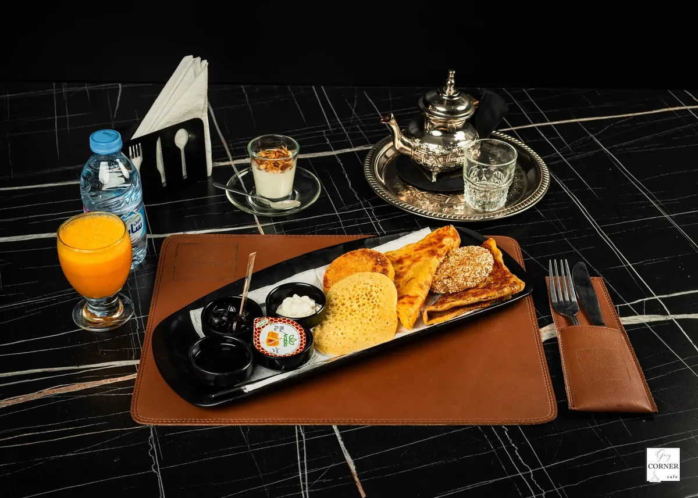

Tradition MarocaineFORMULE BELDI
45 MADL'incontournable ftour marocain authentique : 2 mlaoui dorés et croustillants, 2 harcha tièdes, fromage beldi frais, huile d'olive vierge, olives noires de terroir, miel d'abeille, beurre doux, boisson chaude au choix (thé à la menthe ou café), jus d'orange frais et eau minérale.